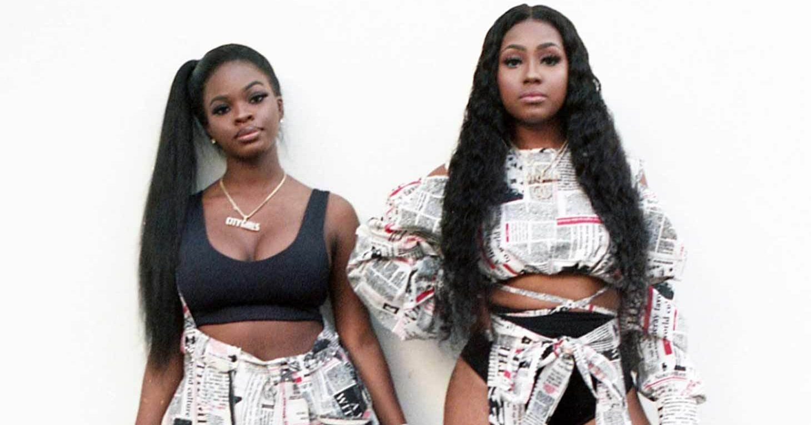

HipHop ML Proposal



Overview
Using machine learning and lyrics retrieved via the Genius API to classify songs as hip hop and RnB or not
Challenge
- Determine whether a song is hip hop or RnB based on lyrics
Methodology
Data Sources
Songs - Billboard’s #1 Songs from Wikipedia
Lyrics - Genius API using geniusr R package
Natural Language Processing (NLP)
Data Preparation
- Text mining to clean and organize the lyrics into analyzable data
Tokenization
- TF-IDF to determine which words in each song separates that song from others
Exploratory Data Analysis
Neural Networks
- Use neural networks models to classify songs based on TF-IDF scores